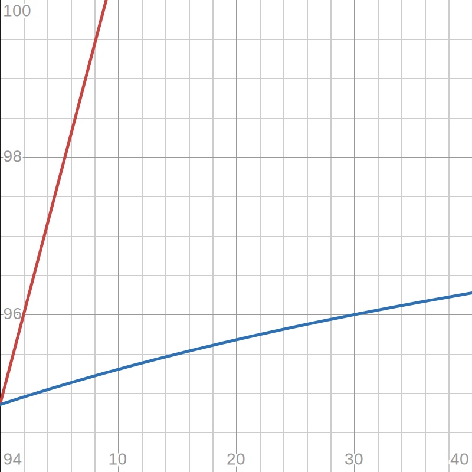

Grade math
For a bit now I've been experimenting with grade math. That is, recalculating your grade, sometimes under different circumstances. Some of this got programmed into an internal app that analyzes your grades; today we're covering what didn't, or what's just interesting.
StudentVue has inaccurate percents
StudentVue has odd and inconsistent rounding. Sometimes it rounds in your favor (eg 94.86% is shown as 95% and 93.63% is shown as 94%); but I've observed it rounding down for no good reason before.
StudentVue's "TOTAL" points are wrong (or at least misleading)
In a class that uses weighted grading, StudentVue will let you view a grid. In the class we'll reference in this post, it looks something like this:
| Assignment Type | Weight | Points | Points Possible |
|---|---|---|---|
| Assignments | 40% | 86.00 | 86.00 |
| Projects | 60% | 96.00 | 105.00 |
| TOTAL | 100% | 182.00 | 191.00 |
This gives you enough information to properly calculate your grade, like . Note that this is not 182/191, as the TOTAL section would make you think. No, the TOTAL section is unweighted, and you need to weight the categories properly.
There is an objectively best place to put an assignment
If you ever get the opportunity to choose which category an assignment goes in, whether it's extra credit or not, know that it shouldn't just go in your lowest category.
You should instead find which category has the most % value per point. For example, in my reference class, one assignment point is worth , or , while one project point is . So in this class, extra credit should go in the projects category.
If the assignment isn't extra credit, you should add the number of points to the category's possible points.
A point regained is an assignment earned
This is a graph showing the impact of points added on my grade. It's clear that red is linear and more efficient at increasing my grade, while blue shows a reciprocal relationship.
a point regained
When you revise or turn in an existing assignment, or get extra credit, you directly increase your grade. This is linear, and reflected as the red line in the graph.
an assignment earned
When a new assignment goes in your grade, it squishes out other assignments in its category. This can be shown using bars.
My grade:
My grade, with a 40 point assignment:
As you can see, the only reason it increases my grade is it squishing out points I lost. This is a reciprocal relationship, has diminishing returns, and is reflected as the blue line.
Due to this, regaining points has much more of an effect on grades than adding assignments. To get my grade to 96%, you could either add 2 points, or add an assignment that is 30/30 points.